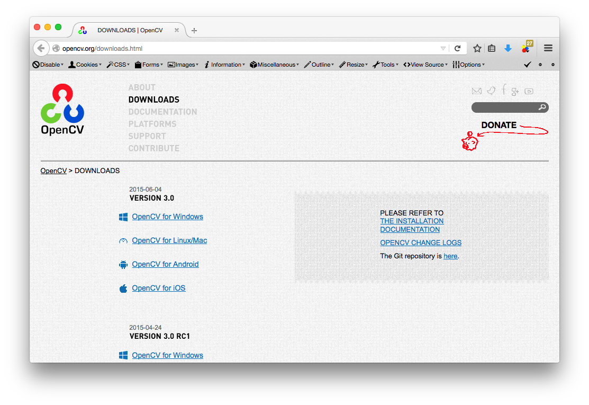

OpenCV 是一套非常強大且好用的影像處理函式庫，一開始使用 C 語言來進行開發，後來移 植到 C++ 上面，並提供了 Python 的綁定。自 2.4 版本後，OpenCV 開始提供了 JAVA 的 wrpaaer，也因此使用 JAVA 或是 Clojure 的人都可以輕鬆愉快的使用 OpenCV 了。
本文將簡單介紹如何在 Clojure 下寫 OpenCV 的程式，而 OpenCV 的程式教學則在以後 (或遙遠的未來) 再來寫 :)
OpenCV 3.0 和 OpenCV 2.x 的 Java 版本有一些不同，3.0 拿掉了以往可以直接透過 imshow 進行顯示的功能，因此你必須將圖片存成檔案再透過 Java 的方式去打開，或者 是透過 ImShow-Java-OpenCV 之類的第三方函式庫來輔助。
除此之外，在 Java 中有些 Class 的位置也有變動，比如 Core.rectange() 就被移動到 Imgproc.rectangle() ，因此在找參考資料時要注意對方是否使用 OpenCV 3.0 以上的版 本。
下載 OpenCV 原始碼並編譯
OpenCV 官網上面並未提供 Linux 或是 Mac OSX 的二進制檔案，所以就讓我們 自己動手編譯吧 ~
首先到 OpenCV 官方網站 去下載原始碼，這邊我選擇 3.0.0 。

原始碼下載好後解壓縮並進入該資料夾
coldnew@Rosia ~/Workspace $ tar xvf opencv-3.0.0.tar.gz && cd opencv-3.0.0
建立一個 build 資料夾，這個資料夾將用來存放編譯出來的檔案以及暫存檔，而我們在使
用 cmake 進行編譯的時候，額外加上 -DBUILD_SHARED_LIBS=OFF 參數讓我們建制出來的
library 不依賴其他函式庫。
mkdir build && cd build cmake -DBUILD_SHARED_LIBS=OFF .. make -j4
當編譯完成後，我們可以找到以下兩個提供 Java 呼叫 OpenCV 功能用的檔案:
bin/opencv-300.jarlib/libopencvj_java300.dylib(linux 下是lib/libopencv_java300.so)
如果你沒有看到 .jar 檔案，請確認在使用 cmake 的時候有通過 Java 測試，以下為我在 Mac OSX 下編譯的範例
coldnew@Sara ~/opencv/build $ cmake -DBUILD_SHARED_LIBS=OFF .. (...) -- Java: -- ant: /usr/local/bin/ant (ver 1.9.3) -- JNI: /System/Library/Frameworks/JavaVM.framework/Header -- Java wrappers: YES -- Java tests: YES (...)
將本地端的函式庫打包成 jar 檔案
編譯完 opencv-300.jar 以及 libopencv_java300.dylib 後，我們需要先將動態函式庫
libopencv_java300.dylib 打包成 .jar 檔案方便日後使用，因此根據你的系統建立
native/<OS>/<ARCH>/ 這樣的目錄，這邊以 Mac OSX 為例:
coldnew@Sara ~ $ mkdir -p native/macosx/x86_64
如果你的作業系統是 Linux 或是 Windows，可以參照下表去建立你的目錄
OS Architectures
Mac OS X -> macosx amd64 -> x86_64
Windows -> windows x86_64 -> x86_64
Linux -> linux x86 -> x86
SunOS -> solaris arm -> arm
sparc -> sparc
接下來，將 libopencv_java300.dylib 複製到剛剛建立的目錄
coldnew@Sara ~ $ cp libopencv_java300.dylib native/macosx/x86_64
完成後，整個 native 資料夾內容會變成這個樣子
coldnew@Sara ~ $ tree native/
native/
└── macosx
└── x86_64
└── libopencv_java300.dylib
2 directories, 1 file
接下來，使用 jar 命令將這個 native 目錄打包成一個 jar 檔案
coldnew@Sara ~ $ jar -cMf opencv-native-300.jar native
現在我們有 opencv-300.jar 以及 opencv-native-300.jar 兩個檔案，是時候將其放
入到我們自己電腦上的 maven 倉庫了~
使用 lein-local 將套件加入本地端的 maven 倉庫
為了可以讓之後的專案都使用我們剛剛編譯好的 OpenCV 函式，最好的方式就是將他加入到
本地倉庫，對於 Leiningen 的使用者而言，我們可以透過 lein-localrepo 來將需要的
jar 函式庫存放到本地端的 maven 倉庫 (~/.m2/repository)去。
在使用 lein-localrepo 之前，你必須在你的 ~/.lein/profiles.clj 加入以下資訊:
{:user {:plugins [[lein-localrepo "0.5.3"]]}}
接著，我們透過 lein-localrepo 去將 opencv-300.jar 放入本地的 maven 倉庫，並設定 套件名稱以及版本
coldnew@Rosia ~ $ lein localrepo install opencv-300.jar opencv/opencv 3.0.0
一樣的作法套用到 opencv-native-300.jar
coldnew@Rosia ~ $ lein localrepo install opencv-native-300.jar opencv/opencv-native 3.0.0
這樣我們以後要在這台機器使用 opencv，就可以直接使用本地的 maven 倉庫去取得 jar 檔案，不用重新製作~
建立我們的專案
終於到建立專案的時間了，我們一樣使用 lein 預設的樣板來建立我們的專案，這裡建立名為 myapp 的專案
coldnew@Rosia ~ $ lein new myapp
專案建立完成後，我們要稍微修改一下 project.clj ，在 :dependencies 欄位加上
opencv 的依賴。
(defproject myapp "0.1.0-SNAPSHOT" :description "FIXME: write description" :url "http://example.com/FIXME" :license {:name "Eclipse Public License" :url "http://www.eclipse.org/legal/epl-v10.html"} :dependencies [[org.clojure/clojure "1.7.0"] [opencv/opencv "3.0.0"] [opencv/opencv-native "3.0.0"]] :injections [(clojure.lang.RT/loadLibrary org.opencv.core.Core/NATIVE_LIBRARY_NAME)])
在這邊，我們另外加入了 :injections 這一行來確保 lein 執行的時候會去載入 opencv
的本地端函式庫，如果你直接使用 lein repl 來測試的話，記得在執行時要輸入:
user=> (clojure.lang.RT/loadLibrary org.opencv.core.Core/NATIVE_LIBRARY_NAME) nil
不然你會遇到像這樣的錯誤:
user=> (import '[org.opencv.core Mat CvType]) org.opencv.core.CvType user=> (def m (Mat. 7 7 CvType/CV_64F)) CompilerException java.lang.reflect.InvocationTargetException, compiling:(form-init400412585733312455.clj:1:1) user=> (Mat.) UnsatisfiedLinkError org.opencv.core.Mat.n_Mat()J org.opencv.core.Mat.n_Mat (Mat.java:-2)
Example 0: 彩色圖變成灰階圖
我們先來個簡單的範例，將一張彩色圖片轉換成灰階圖片，我選用的範例是這張:
編輯 src/myapp/example0.clj 並添加以下內容:
(ns myapp.example0 (:import [org.opencv.imgcodecs Imgcodecs] [org.opencv.imgproc Imgproc])) (defn img->gray [f] (let [img (Imgcodecs/imread f)] (Imgproc/cvtColor img img Imgproc/COLOR_RGB2GRAY) (Imgcodecs/imwrite "example0-gray.png" img) (println "generate generate example0-gray.png"))) (defn -main [& args] (let [arg1 (nth args 0)] (if arg1 (img->gray arg1) (println "Error: Please specify filename."))))
使用 lein 執行程式
coldnew@Rosia ~/myapp $ lein run -m myapp.example0 sample0.png
接著，你就會看到當前目錄出現了 example0-gray.png 這個檔案，而顏色則變成灰階版本了
Example 1: 動畫人臉偵測
除了人臉偵測以外，我們也可以對動畫人物進行臉部偵測，這邊使用了 GitHub/nagadomi 提供的 lbpcascade_animeface.xml 來作為我們臉部偵測的分類器。
在這個範例中，我選用了另外一張動畫人物圖 (因為臉比較多)，如下:
編輯 src/myapp/example1.clj 並添加以下內容:
(ns myapp.example1 (:import [org.opencv.core Mat MatOfRect Point Scalar] [org.opencv.imgcodecs Imgcodecs] [org.opencv.imgproc Imgproc] [org.opencv.objdetect CascadeClassifier])) (defn face-detect [f] (let [img (Imgcodecs/imread f) gray (Mat.) faces (MatOfRect.)] ;; Convert image to graylevel and equalize the histogram (Imgproc/cvtColor img gray Imgproc/COLOR_RGB2GRAY) (Imgproc/equalizeHist gray gray) ;; Load the classifier file from ;; https://github.com/nagadomi/lbpcascade_animeface (doto (CascadeClassifier.) (.load "./lbpcascade_animeface.xml") (.detectMultiScale gray faces)) ;; Draw rectangle according to face size (doseq [face (.toList faces)] (Imgproc/rectangle img (Point. (.x face) (.y face)) (Point. (+ (.x face) (.width face)) (+ (.y face) (.height face))) (Scalar. 144 48 255))) ;; Write the result (Imgcodecs/imwrite "example1-fdetect.png" img) (println "generate generate example1-fdetect.png"))) (defn -main [& args] (let [arg1 (nth args 0)] (if arg1 (face-detect arg1) (println "Error: Please specify filename."))))
使用 lein 執行程式
coldnew@Rosia ~/myapp $ lein run -m myapp.example1 sample1.png
接著，你就會看到當前目錄出現了 example1-fdetect.png 這個檔案，並且動漫人物的臉都被方框框住了~
取得範例程式碼
本篇文章的範例程式碼已經上傳到 GitHub 上，你可以使用以下方式取得程式碼
git clone https://github.com/coldnew/blog-tutorial-examples.git
並切換到 2015/opencv3_hello 資料夾去
coldnew@Rosia ~ $ cd blog-tutorial-examples/2015/opencv3_hello
程式的執行方式則和本篇文章相同 ~ Have Fun~~